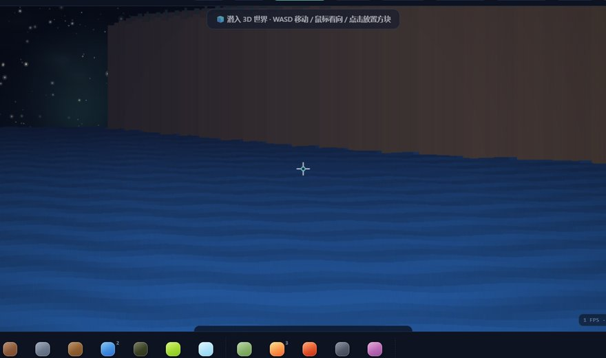

星恬的小站

五子棋 · 学习反制版
内嵌 Rapfi 引擎：经典算力 ×「灵拙」神经网络双引擎可选，AI 会学习你的棋风并在下一局反制；还有陪你说话的灵拙。
来一局 →
六边形维度展示器
无上限展开的六边形几何展示器：多层级嵌套、旋转与配色实验，随手转一转就挺上头。
玩一下 →
无限星空生成器
像 Minecraft 一样用种子生成星空：往任何方向拖动，无限延伸都是同一片宇宙。星星会眨眼、流星会划过，星团与空洞交错，还能偶遇螺旋星系——换种子就是换一个宇宙的气质。
去看星星 →
康威生命游戏花园
撒一把种子看细胞生长：能存「物种」、还能让两个物种相向对撞，看它们擦出什么火花。能玩一晚上的那种。
去播种 →
函数音乐
把函数画成声波：正弦是纯音、方波是游戏机、随便叠几个三角函数就是一个新乐器——图形还会跟着跳。
去弹一段 →扫雷
经典扫雷的浏览器版：初级 9×9 到高级 16×30，还能自定义行列和雷数（最高 60×100），生成链接就能把同一片雷区分享给朋友；首击永远安全、双击数字一秒展开一圈；手机上长按插旗，各难度最佳成绩都记着。还藏着一套「超位魔法」特效——点亮后开格有发光封印，通关有全屏魔法阵（默认关闭）。
来排雷 →
几何工坊 · 数学工作台
面向高中数学的几何教学工作台：平面 / 立体双模式，函数实时绘制、向量关系自动判定、面积体积二面角一键求解，还能让 AI 读题自动出图。
去作图 →
打卡日程表
给自己定几个小目标：一键打卡、连续天数、月度日历回顾；数据只存在你的浏览器里，可离线使用。
来打卡 →
配色实验室
选两个颜色，实时预览整套 UI（按钮 / 卡片 / 玻璃导航全派生），一键复制或下载 CSS 变量，直接拿去用。
去调色 →
函数拟合器
丢进一堆散点，自动找出最像的函数：线性 / 二次 / 三次 / 指数 / 幂 / 对数六种模型实时比拼 R²，画布点一点数据就重算。
去拟合 →
错题本 · 间隔重复
把错题记下来，按遗忘曲线自动排复习：忘了就回炉，记住就拉长间隔——用最少的复习次数，换最牢的记忆。
去记错题 →
宇宙地图 · 全站导航
14 颗作品星串成一片宇宙：去过的会亮起来，点一颗星就能直达 —— 不知道逛哪好，先来这看一眼星图。
去看星图 →心情日历
43 张猫耳少女表情，给每天贴一张心情：点一个日子贴上，翻一翻就是这个月的样子。数据存在本机浏览器，支持导出备份。
贴一张 →
整活 · 隐私协议
伪装成「服务协议与隐私政策」的整活小页面：郑重其事地点下「同意并继续」，就会收获一点小小的惊喜（笑）。
点一下 →
假加载页
一个非常正经的加载页面：进度条卡在 99% 开始跟你唠嗑，聊两句它才肯承认其实早就加载完了。
去等一等 →
今日份诊断报告
给今天的你开一张体检单：精神状态、欧气、发量……七项指标每日不同，还能换变体、存成报告图，纯玄学仅供参考（笑）。
去体检 →
万物沙盒
一块向两侧无限延伸的星海像素大陆：22 种元素自己会反应，光束会拐弯、棱镜会下彩虹；一键潜入真 3D 世界（WASD + 鼠标自由飞行、点哪造哪）——水面上还有会「嘎」的鸭鸭舰队。走到哪，世界长到哪。
去探索 →超位魔法阵
一块专门炫技的魔法画布：法阵、领域展开、超位爆发，还有那个——无量空处。六个阶段自动演出，六套配色随手换，符文密度 / 旋转 / 辉光 / 星尘实时可调；点一下鼠标就是一次施法。
去施法 →你居然真的逛完了整站
谢谢你，认真的旅人。
这个小站里的每一样东西，都是一个个深夜里「再改最后一版」攒出来的。
送你一句话 ——愿你对这个世界，永远保持好奇。
—— 星恬 & 月月
你好呀，我是星恬，喜欢下棋、写点小东西、捣鼓各种有趣的玩意。这个小站里的每一件作品，从会学习的五子棋 AI 到几何教学工作台，都是自己一点点折腾出来的。
平时也喜欢和 AI 小伙伴一起做实验 —— 有什么好玩的点子，欢迎来聊～
（对了，头像里有东西，点一下，再点一下，别停）